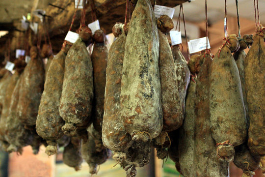

Un homme, le maquis, le temps
A Cantina di Corsica, c'est une seule paire de mains. La chasse au sanglier dans la montagne, la découpe, la salaison, le séchage à l'air du village, jusqu'à l'emballage de votre commande. Rien n'est délégué, rien n'est industriel. C'est plus lent, c'est plus rare — c'est ce qui donne le goût.

Contact
Commandes et renseignements en direct.
Téléphone / WhatsApp : à compléter
Email : à compléter
Village : à compléter, Corse